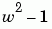

Exploring a Conformal Mapping
Spatial- and image-transformation functions are useful in understanding a conformal mapping that is important in fluid-flow problems, and the mapping itself can be used to transform imagery for an interesting special effect.
| Key concepts: |
User-defined image transformations, conformal mapping, transforming vectors, map-controlled fill |
| Key functions |
Overview of Demo
The demo includes these steps:
Step 1: Warp an Image Using a Conformal Transformation
This demo warps an image using (z + 1/z)/2 as an inverse transformation.
A two-dimensional spatial transformation f, where f: R^2 -> R^2 is conformal if (x,y) = f(u,v) is given by an analytic function F, where F: C -> C and x + i*y = F(u + i*v).
Such a transformation is also called a conformal mapping. Conformal mappings have many important properties and uses; one property relevant to image transformations is that they preserve local shape, except sometimes at isolated points.
The analytic function G, where G(z) = (z + 1/z)/2 defines a conformal mapping that is important in fluid flow. Under this transformation, lines of flow around a circle (or a circular cylinder, if we add a third dimension) transform to straight lines. (See pp. 340-341 in Strang, Gilbert, Introduction to Applied Mathematics, Wellesley-Cambridge Press, Wellesley, MA, 1986.)
In this demonstration, we use G to define an inverse transformation to distort a rectangular image. We obtain both a special effect and insight into this particular conformal mapping.
Our inverse transformation, g, is defined such that (u,v) = g(x,y) is given by w = G(z), where w = u + i * v and z = x + i * y.
Load the peppers image, extract a 300-by-500 subimage, and display it.
A = imread('peppers.png');
A = A(31:330,1:500,:);
figure, imshow(A);
title('Original Image');
Use maketform to make a custom TFORM struct with a handle to the following function as its INVERSE_FCN argument:
| Inverse Function: ipex004.m |
function U = ipex004( X, t ) |
conformal = maketform('custom', 2, 2, [], @ipex004, []);
Define bounds for mapping the original and transformed images to the input and output complex planes. Note that the proportions in uData and vData match the aspect ratio of the original image (5/3).
uData = [ -1.25 1.25]; % Bounds for REAL(w) vData = [ 0.75 -0.75]; % Bounds for IMAG(w) xData = [ -2.4 2.4 ]; % Bounds for REAL(z) yData = [ 2.0 -2.0 ]; % Bounds for IMAG(z)
Call imtransform including a SIZE parameter with an aspect ratio that matches the proportions in xData and yData (6/5), and view the result.
B = imtransform( A, conformal, 'cubic', ...
'UData', uData,'VData', vData,...
'XData', xData,'YData', yData,...
'Size', [300 360], 'FillValues', 255 );
figure, imshow(B);
title('Transformed Image');
Compare the original and transformed images. Except that the edges are now curved, the outer boundary of the image is preserved by the transformation. Note that each feature from the original image appears twice in the transformed image (look at the various peppers). And there is a hole in the middle of the transformed image with four regular cusps around its edges.
In fact, every point in the input w-plane is mapped to two points in the output z-plane, one inside the unit circle and one outside. The copies inside the unit circle are much smaller than those outside. It's clear that the cusps around the central hole are just the copies of the four image corners that mapped inside the unit circle.
Step 2: Explore the Mapping Using Grid Lines, Circles, and Images
If the transformation created with maketform has a forward function, then we can apply tformfwd to regular geometric objects (in particular, to rectangular grids and uniform arrays of circles) to obtain further insight into the transformation. In this example, because G maps two output points to each input point, there is no unique forward transformation. But we can proceed if we are careful and work with two different forward functions.
If we let w = (z + 1/z)/2 and solve the quadratic that results (z^2 + 2*w*z + 1 = 0), then we find z = w +/- sqrt(w^2 - 1).
Taking the positive and the negative square roots leads us to two separate forward transformations. We construct the first using maketform and a handle to the function:
| Forward Function: Forward1.m |
function X = Forward1( U, t )Z = W + sqrt(W.^2 - 1);X(:,2) = imag(Z); |
and construct the second with another function, identical except for a change of sign:
| Forward Function: Forward2.m |
function X = Forward1( U, t )Z = W - sqrt(W.^2 - 1);X(:,2) = imag(Z); |
Function ipex005 creates custom TFORM objects using handles to these functions
t1 = maketform('custom', 2, 2, @Forward1, [], []);
t2 = maketform('custom', 2, 2, @Forward2, [], []);
and uses them to transform a set of grid lines and a regular array of circles with tformfwd.
ipex005 produces four figures showing the grid lines, circles, and images in the input and output planes (the w-plane and z-plane):
The source for ipex005 is in matlabroot/toolbox/images/imdemos/ipex005.m. Wait for all four figures when running it.
ipex005(A,uData,vData,B,xData,yData)
The grid lines, before and after the transformations, are color-coded according to their quadrants in the input plane, and the colors follow the transformed grids to the output planes. Note that each quadrant transforms to a region outside the unit circle and to a region inside the unit circle. The right-angle intersections between grid lines are preserved under the transformation -- part of the shape-preserving property of conformal mappings -- except for the points +/- 1 on the real axis.
A regular array of uniformly-sized circles transforms to an circle packing with tangencies preserved. In this case, the color coding indicates use of the positive (green) or negative (blue) square root of . Note that the circles change size -- there are dramatic scale changes across the transformed image -- but that they remain circles (shape preservation, once again).
MATLAB graphics makes it easy to shift and scale the original and transformed images so that they superpose on the input (w-) and output (z-) planes, respectively. The use of semi-transparency makes it easier to see other elements of the plots, such as the black ellipse in the w-plane. It has intercepts at +/- 5/4 on the horizontal axis and +/- 3/4 on the vertical axis. G maps two circles centered on the origin to this ellipse: the one with radius 2 and the one with radius 1/2. And, as shown in red, G maps the unit circle to the interval
[-1 1] on the real axis.
Step 3: Obtain a Special Effect by Masking Parts of the Output Image
If the inverse transform function within a custom TFORM struct returns a vector filled with NaN for a given output image location, then imtransform (and also tformarray) assign the specified fill value at that location. In this step we repeat Step 1, but modify our inverse transformation function slightly to take advantage of this feature. We use maketform('custom'...) to make a TFORM struct with a handle to the following INVERSE_FCN:
| Inverse Function: ipex006.m |
function U = ipex006( X, t ) |
The source is in matlabroot/toolbox/images/imdemos/ipex006.m. This is the same as the function used in Step 1, except for the two additional lines:
q = 0.5 <= abs(Z) & abs(Z) <= 2; |
which cause the inverse transformation to returns NaNs for any point not between the two circles with radii 1/2 and 2, centered on the origin. The result is to mask that portion of the output image with the specified fill value.
ring = maketform('custom', 2, 2, [], @ipex006, []);
Bring = imtransform( A, ring, 'cubic',...
'UData', uData, 'VData', vData,...
'XData', [-2 2], 'YData', yData,...
'Size', [400 400], 'FillValues', 255 );
figure, imshow(Bring); title('Transformed Image With Masking');
The result is identical to our initial transformation except that the outer corners and inner cusps have been masked away to produce ring effect.
Step 4: Repeat the Effect on a Different Image
Applying the "ring" transformation that we created in Step 3 to an image of winter greens (hemlock and alder berries) leads to a rather aesthetic special effect that could have practical applications.
Load the greens image, which already has a 3/5 aspect ratio, and display it.
C = imread('greens.jpg');
figure, imshow(C);
title('Winter Greens Image');
Apply the "ring" transformation defined above and display the result, this time creating a square output image.
D = imtransform( C, ring, 'cubic',...
'UData', uData, 'VData', vData,...
'XData', [-2 2], 'YData', [-2 2],...
'Size', [400 400], 'FillValues', 255 );
figure, imshow(D);
title('Transformed and Masked Winter Greens Image');
We close with a final example of shape preservation: The round alder berries stayed round!